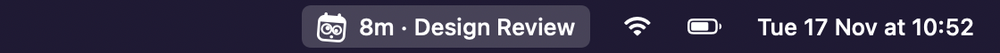
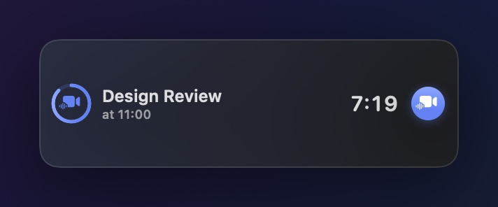
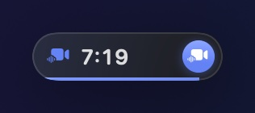
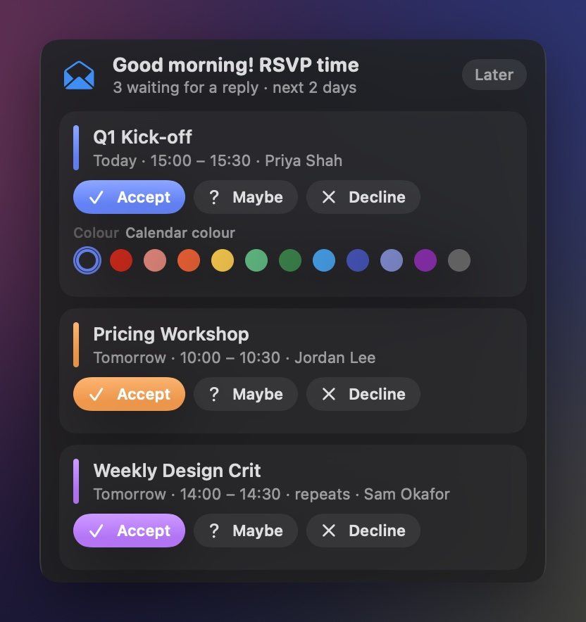

Cadence
Your calendar, gently panicking on your behalf. A tiny native macOS menu-bar app that makes sure you're never late for a meeting again.


A full-screen nudge you can't miss
30 seconds before a meeting (configurable), Cadence covers every display with a countdown and a big Join button.
Return joins · Esc dismisses · Snooze nags you again a minute later.
Want more warning? Add an optional heads-up notification a few minutes before each meeting.

…but never while you're presenting
Sharing your screen in Zoom or Teams, or running a Keynote or PowerPoint slideshow? Displays being shown are never covered — a small banner appears elsewhere instead.
On a call? You get a quiet banner with no focus stealing.

Today, at a glance
Click the menu bar for a colour-coded agenda with times, attendees, a live NOW badge and one-click Join on everything joinable.
In-person meetings get a map, live travel time and a "leave in 12m" hint, plus a "time to leave" reminder based on live traffic.



A countdown that floats
A glass pill that sits above everything, on every Space. Drag it anywhere and it snaps to the edges.
Pick Standard, Compact or an ultra-small Mini, and let it grow as the meeting gets close: one size up at 15 minutes, full size at 5. Show it only when something starts soon, and right-click any event to keep it (or the whole series) off the panel.

Double-booked? It asks.
When two real meetings overlap, Cadence asks which one you want alerts for. Your choice sticks; the other is quietly muted.

RSVP without opening your calendar
Each morning Cadence gathers every invite still waiting for a reply into one card: Accept, Maybe or Decline, and pick a colour while you're there. New invites get the same card, or a notification with reply buttons, as soon as they arrive.
Replies go straight to your Google and Microsoft 365 accounts, and the organiser hears back as usual.
Ask your assistant about your day
Cadence includes a local MCP server, so Claude, Cursor, Windsurf or any other MCP client on your Mac can read your merged calendar, find free time, reply to invites and hear about meetings as they start and end.
Set it up in one click from Settings → Assistants. Every action pops a card in Cadence first (Allow, Deny or Always allow), and an activity view shows exactly what each assistant did.
Everything else
🔗 Join links from anywhere
Zoom, Meet, Teams, Webex, Slack huddles, FaceTime and more — even buried in HTML invites or wrapped in SafeLinks.
⌨️ Global join shortcut
⌃⌥⌘J joins whatever's starting in the next 10 minutes, or the one you're late for.
🗂️ Every calendar
macOS Calendar, ICS/webcal feeds, and Google Calendar and Microsoft 365 directly, with as many accounts as you like. Duplicates are merged.
🗣️ Wrap-up nudge
Five minutes before a meeting ends, a reminder to wrap up, and a warning if the next one starts straight after.
☀️ Morning summary
How many meetings you have, when the first starts, when you're done and which invites need a reply. Tomorrow shows up in the evening.
🎨 Event colours
Uses the colours you set in Google Calendar, Outlook categories or ICS feeds, and lets you recolour Google events from the menu.
🧭 The right browser profile
Opens each meeting in the right Chrome, Edge, Brave, Vivaldi or Firefox profile (or Firefox container): per account, per calendar, or by organiser, like @client.com → Client.
🧹 Filters
Hide all-day, declined, tentative or link-less events; include or exclude by keyword.
😰 An icon with feelings
Calm, nervous at 15 minutes, sweating at 5.
🔒 Your calendar stays on your Mac
No Cadence accounts, no analytics, no servers. Cadence only talks to the calendar services you connect (like Google and Microsoft 365) and Apple Maps for travel times, and assistants reach it through a private local socket with no network port.
Read the privacy policy →